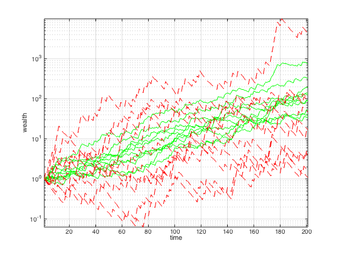

% Boyd & Vandenberghe "Convex Optimization" % Joëlle Skaf - 04/24/08 % (a figure is generated) % % The investment strategy x that maximizes the long term growth rate % R = sum_{j=1}^m pi_j*log(p_j^Tx) % is called the log-optimal investment strategy, and can be found by % solving the optimization problem % maximize sum_{j=1}^m pi_j log(p_j^Tx) % subject to x >= 0, sum(x) = 1, % where p_ij is the return of asset i over one period in scenario j and % pi_j is the probability of scenario j. There are n assets and m scenarios. % We consider the case of equiprobable scenarios. % % The log-optimal long term growth rate is found and compared to the one % obtained with a uniform allocation strategy, i.e., x_i=(1/n). % Sample trajectories ofthe accumulated wealth for the optimal strategy and % the uniform one are plotted. % Input data P = [3.5000 1.1100 1.1100 1.0400 1.0100; 0.5000 0.9700 0.9800 1.0500 1.0100; 0.5000 0.9900 0.9900 0.9900 1.0100; 0.5000 1.0500 1.0600 0.9900 1.0100; 0.5000 1.1600 0.9900 1.0700 1.0100; 0.5000 0.9900 0.9900 1.0600 1.0100; 0.5000 0.9200 1.0800 0.9900 1.0100; 0.5000 1.1300 1.1000 0.9900 1.0100; 0.5000 0.9300 0.9500 1.0400 1.0100; 3.5000 0.9900 0.9700 0.9800 1.0100]; [m,n] = size(P); Pi = ones(m,1)/m; x_unif = ones(n,1)/n; % uniform resource allocation % Find the log-optimal investment policy cvx_begin variable x_opt(n) maximize sum(Pi.*log(P*x_opt)) sum(x_opt) == 1 x_opt >= 0 cvx_end % Long-term growth rates R_opt = sum(Pi.*log(P*x_opt)); R_unif = sum(Pi.*log(P*x_unif)); display('The long term growth rate of the log-optimal strategy is: '); disp(R_opt); display('The long term growth rate of the uniform strategy is: '); disp(R_unif); % Generate random event sequences rand('state',10); N = 10; % number of random trajectories T = 200; % time horizon w_opt = []; w_unif = []; for i = 1:N events = ceil(rand(1,T)*m); P_event = P(events,:); w_opt = [w_opt [1; cumprod(P_event*x_opt)]]; w_unif = [w_unif [1; cumprod(P_event*x_unif)]]; end % Plot wealth versus time figure semilogy(w_opt,'g') hold on semilogy(w_unif,'r--') grid axis tight xlabel('time') ylabel('wealth')
Successive approximation method to be employed.
For improved efficiency, SDPT3 is solving the dual problem.
SDPT3 will be called several times to refine the solution.
Original size: 36 variables, 15 equality constraints
10 exponentials add 80 variables, 50 equality constraints
-----------------------------------------------------------------
Cones | Errors |
Mov/Act | Centering Exp cone Poly cone | Status
--------+---------------------------------+---------
10/ 10 | 1.166e+00 9.529e-02 0.000e+00 | Solved
10/ 10 | 1.083e-01 9.046e-04 0.000e+00 | Solved
10/ 10 | 2.870e-03 6.340e-07 0.000e+00 | Solved
0/ 0 | 0.000e+00 0.000e+00 0.000e+00 | Solved
-----------------------------------------------------------------
Status: Solved
Optimal value (cvx_optval): +0.0230783
The long term growth rate of the log-optimal strategy is:
0.0231
The long term growth rate of the uniform strategy is:
0.0114
